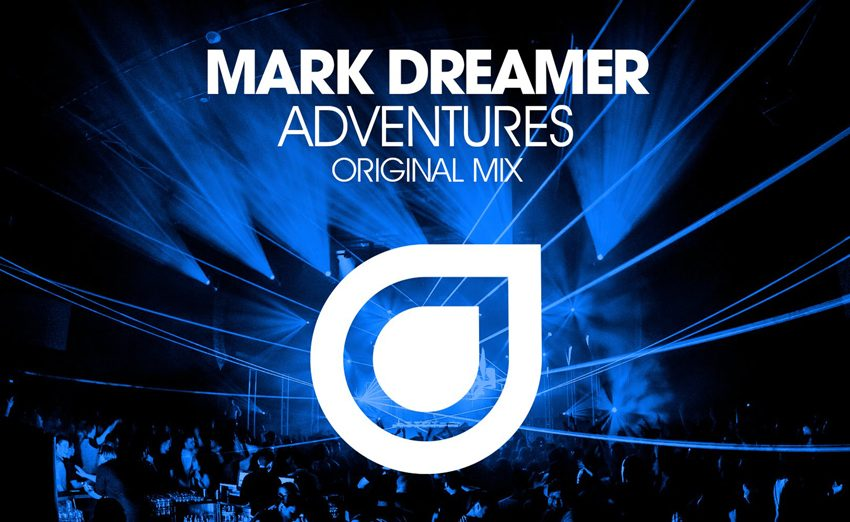

Mark Dreamer Delivers Progressive Trance Perfection With “Adventures”


The week saw the release of one of those particularly special and rare progressive trance records that manages to be both deep and euphoric at once. Mark Dreamer goes for unabashed euphoric thrills with “Adventures,” lacing it with powerful blasts of melody that are fueled by the kind of powering club grooves that have become a trademark for the Enhanced Music stable.
You can grab Mark Dreamer’s “Adventures” now on Beatport, and listen below to its debut late last year on Armin van Buuren’s A State of Trance radio show.
Follow Mark Dreamer on Facebook
Follow Enhanced Music on Facebook | Twitter